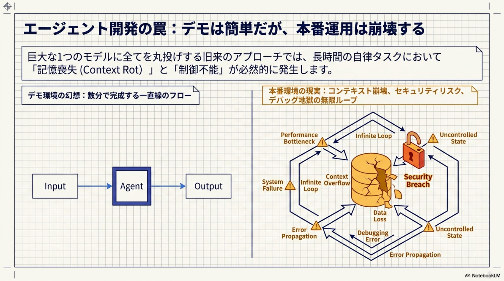

本番運用を変える5つの数字
IMPACTAgent / Handoff / Trace
コスト削減
最小実装
OpenTelemetry互換
完全分離
3つのコア・プリミティブ
FOUNDATIONAgents（エージェント）
指示・ツール・安全策をパッケージ化した「専門家」単位。4行20秒で最小構成の自律エージェントを定義可能。
Agent(instructions, tools)Handoffs（ハンドオフ）
特定タスクを他エージェントへ動的に委譲する「バトンタッチ」。会話コンテキストを保持したまま専門家へ制御を渡す。
handoff(target_agent)Tracing（トレーシング）
全実行プロセスを可視化。OpenTelemetry互換で、どのエージェントがどのツールをいつ呼んだかを100%追跡し、デバッグ工数を大幅削減。
@trace / OTELフレームワーク全体像
BLUEPRINT
3プリミティブ + Sandbox / Guardrails / Snapshot による本番運用レディの全体設計図
本番運用を支える3つの安全装置
SAFETYSandbox（サンドボックス）
Harness（制御プレーン）とCompute（実行プレーン）を物理・論理的に分離。隔離された使い捨てコンテナでコード実行するため、ホストPCや本番環境を守る。
Modal / gVisorGuardrails（ガードレール）
入力・出力・ツール実行の各段階で検証ロジックを並列実行。違反を検知したら即座に処理を遮断するフェイルファースト設計。
Input / Output / ToolSnapshot（スナップショット）
長時間タスクの耐久性。Sandboxの状態を保存・復元し、クラッシュしても中断箇所から安全に再水和（rehydrate）して再開可能。
Redis / SQLAlchemy6つの深刻な課題と構造的解決策
PAIN → FIX⚠ 課題1: フレームワーク肥大化
既存の複雑なワークフローは数百行のコードと状態管理が必要で、学習コストが高い。
✓ 解決: 3プリミティブ収束
Agents / Handoffs / Tracingの最小構成で、直感的にマルチエージェントを構築。
⚠ 課題2: 実行の重大リスク
AIにファイル操作権限を直接与えると、プロンプトインジェクションで環境破壊や情報流出の危険。
✓ 解決: Harness/Compute分離
制御と実行を物理的に分離し、隔離Sandbox内で安全に作業。
⚠ 課題3: コンテキスト崩壊
長時間タスクで膨大な履歴から文脈を見失い、エラー時に最初からやり直すコスト浪費。
✓ 解決: Session永続化
Redis / SQLAlchemyで会話履歴を管理、Snapshotで途中再開。
⚠ 課題4: 巨大モデル依存
1つの万能モデルに全処理を任せると、精度低下と不要コスト高騰。
✓ 解決: Handoffs適材適所
簡易タスクは安価モデル、高度推論はGPT-5.4 / Claude 4.7へ動的ルーティング。
⚠ 課題5: ブラックボックス化
自律性が高まるほど、判断根拠とツール使用が不透明になりデバッグ困難。
✓ 解決: Tracing標準内蔵
OpenTelemetry互換で全実行プロセスを可視化、運用時の調査を劇的短縮。
最小実装：4行でマルチエージェント
CODETriage Agent が問い合わせを判別し、専門の日本語/英語エージェントへ Handoff する最小パターン。従来フレームワークの数百行相当の処理を数行で表現。
コスト最適化の二本柱
ECONOMICS主要フレームワーク比較
VS| 項目 | OpenAI Agents SDK | LangGraph | pi-mono |
|---|---|---|---|
| 設計思想 | 軽量3プリミティブ | グラフベース状態機械 | 最小主義・反フレームワーク |
| 委譲メカニズム | Handoffs & Guardrails 内蔵 | StateGraphノード遷移 | 手動実装が必要 |
| 可観測性 | Tracing 標準搭載 (OTEL) | LangSmith連携が必要 | 多機能だが外部依存多 |
| Sandbox | Compute分離（強力） | ユーザー実装に委ねる | 非搭載 |
| 推奨用途 | 高速プロトタイプ〜エンタープライズ本番 | 複雑な分岐・ループワークフロー | カスタム実装前提の軽量利用 |
Request → Response までの完全トレース
FLOW導入が刺さる4つの現場
USE CASES🏢 社内業務自動化 / IT部門
問い合わせトリアージから申請処理までを専門エージェント群で分担。Guardrailsで機密情報流出を阻止し、Tracingで監査証跡を自動確保する。
TriageComplianceAudit👨💻 ソフトウェア開発 / AIエンジニア
Codex / Cursor型の開発支援エージェントを構築。Sandboxで未検証コードを隔離実行し、SnapshotでCI待ちや長時間ビルドを中断再開。
DevOpsSandboxCI/CD📊 研究・データ分析
データ取得・前処理・可視化を担う専門エージェントをHandoffsで連結。数時間単位の分析ジョブもSnapshotで耐障害化。
ETLLongrunRecovery🎧 カスタマーサポート / PM
多言語・多商材の問い合わせをTriage Agentが振り分け、専門FAQエージェントへHandoff。ハイブリッドモデル戦略で応答品質とコストを両立。
Multi-langCXCost-Opt関連ヘッドライン（同日トップニュース）
RADAR◆ TAKEAWAY ◆
OpenAI Agents SDKは、複雑な自律AIエージェント開発を3つのプリミティブ（Agent / Handoff / Trace）と3つの安全装置（Sandbox / Guardrails / Snapshot）に集約し、数百行の状態管理を数行で置き換える。
Prompt Cachingで最大90%のコスト削減、Responses APIでマルチターン消費を圧縮、Handoffsでハイブリッドモデル戦略を実装すれば、プロトタイプから本番まで同じコードベースでスケールできる。
「軽さ」「安全性」「可観測性」を同時に満たす本番運用の標準設計図として、2026年のエージェント開発の基準となる公算が大きい。